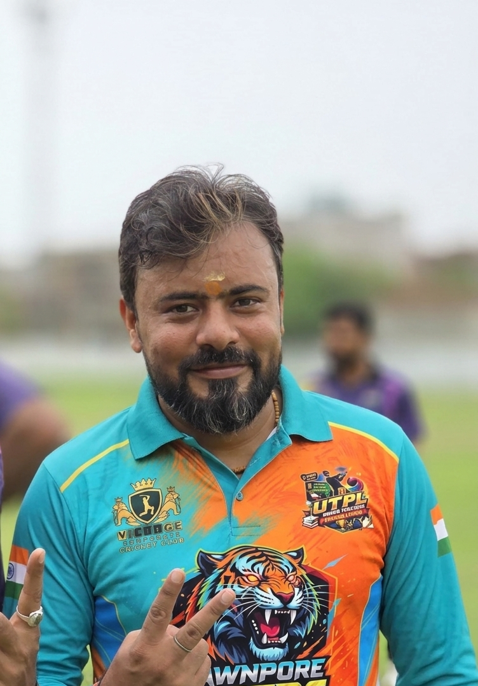

Together We Roar, Together We Win

Role : Vice Captain
Batting : Right Hand Batsman
Bowling : Right Hand Medium Pacer
Praveen is the Vice Captain of CAWNPORE TIGERS XI. He leads from the front with his dependable right-hand batting and contributes with accurate right-arm medium pace bowling. His experience and leadership play a vital role in the team's success.
⬅ Back to HomeRole
Batting
Bowling
Team